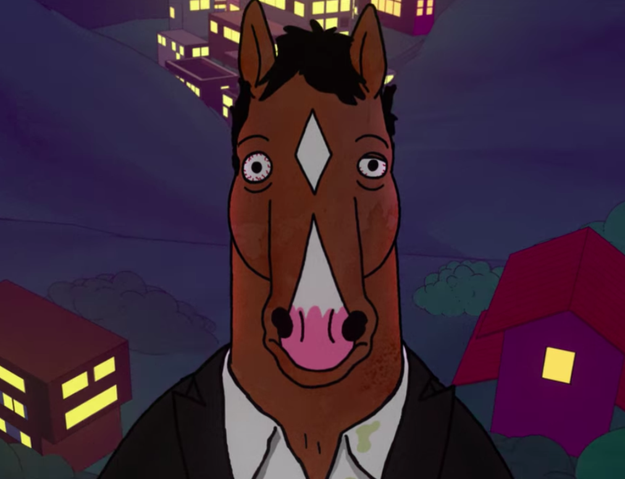

"Bojack Horseman" is an animated television series that follows the life of a former sitcom star challenged with addiction, depression and strained relationships with his family. Set primarily in Hollywood, "Bojack Horseman" is so many shows wrapped into one. It's a comedy, a drama and a love letter to all things Hollywood. The series revolves around the anthropomorphic horse Bojack Horseman, a washed-up star of a 1990s sitcom.
The series premiered on Netflix on Auguest 22, 2014. On September 20, 2018, Netflix renewed the show for its sixth and final season, and the series ended on January 31, 2020, with a total of 77 episodes.
The series is set in an alternate world where humans and anthropomorphic animals live side by side, taking place mostly in "Hollywoo" (name is changed after the D is stolen from the sign). Bojack Horseman is the washed-up star of the 1990s sitcom Horsin' Around, which centered around a young backelor horse trying to raise three human children who has been orphaned. After starring in the popular sitcom, Bojack Horseman struggles with his deteriorating popularity, depression, addiction and maintaining all the relationships with those he cares about, but can't seem to stop hurting, all while living in the satirical, pun-filled city of HollyWoo, California.